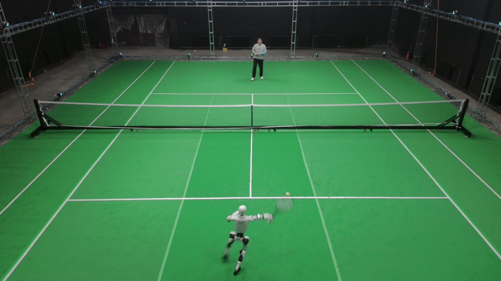

Galaxy General Robotics
开源算法
银河通用把全身运动、操作和导航三条研究线上的代码公开出来。这里只放已经可以复现的学术项目，论文、项目页和仓库放在一起。
00
重点工作
三条全身运动主线。它们分别对应通用跟踪、抗扰动跟踪，以及高动态的网球对打。
01
全身运动
上面三项是这个方向的代表。同一条线上还开放了遥操作、室内穿行、跟踪评测和共语动作。
OpenWBT
R2S2Whole-body teleoperation of Unitree G1 with Apple Vision Pro
一个人用 Vision Pro 遥操作全身，在真机和仿真里完成行走、下蹲、弯腰和抓取。技术基础来自 R2S2。
Click-and-Traverse
TraversalCollision-Free Humanoid Traversal in Cluttered Indoor Scenes
在地面、侧面和头顶同时有障碍的室内场景中穿行，并从多个专家策略蒸馏出通用策略。
HumanTracker
ECCV 2026Towards Comprehensive and Human-Aligned Motion Tracking Benchmark
约 153 小时光学动捕，加上和人类偏好对齐的轨迹评分，用来判断跟踪结果看起来是否自然。
RoboGesture
ECCV 2026Real-Time Semantic-aligned Co-Speech Gestures for Humanoid Interaction
从语音实时生成语义对齐的共语手势，并在人形机器人上做无碰撞执行。
02
操作
抓取、潜动作、空间推理和灵巧手。Astra 作为策略的评测报告也放在这一栏。
Astra Policy
本站报告Exploring the Comprehensive Capabilities of GPT-6 Astra as Policies
把 Astra 当作可执行策略，在操作、灵巧手、视觉导航、人形控制和运动上对照评测。
LDA-1B
RSS 2026Scaling Latent Dynamics Action Model via Universal Embodied Data Ingestion
在三万小时以上的人机异构数据上，同时学习动力学、未来预测和动作。
GraspVLA
CoRL 2025A Grasping Foundation Model Pre-trained on Billion-scale Synthetic Action Data
用十亿帧合成抓取轨迹预训练，不靠真实机器人数据微调，直接做开放词汇抓取。
SoFar
NeurIPS 2025 SpotlightLanguage-Grounded Orientation Bridges Spatial Reasoning and Object Manipulation
用语言描述的朝向把空间理解和六自由度操作接起来，并包含 Open6DOR V2 评测。
UniDexGrasp++
ICCV 2023Improving Dexterous Grasping Policy Learning via Geometry-aware Curriculum
用几何课程和通用—专家迭代，把灵巧抓取策略学到大规模物体上。ICCV 口头报告，最佳论文提名。
DexGraspNet
ICRA 2023A Large-Scale Robotic Dexterous Grasp Dataset for General Objects
面向 ShadowHand 的大规模灵巧抓取数据与合成方法。ICRA 操作方向杰出论文提名。